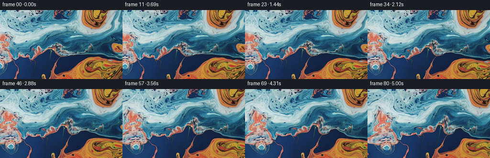
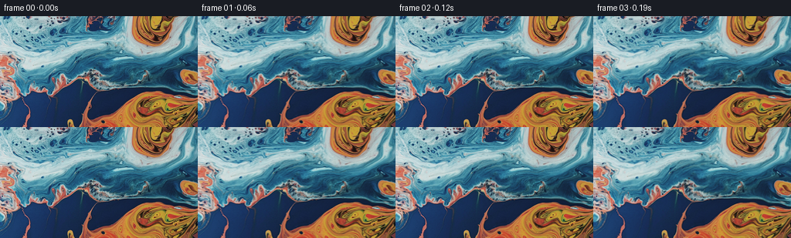

候选 01 · 2026-11-09T00:28:15.538409+00:00 · 点开播放与检查图
inspection.png

transition_check.png

代码变化
--- 上一保存版本
+++ 本次保存版本
@@ -0,0 +1,139 @@
+"""Deterministic image-based macro liquid animation, without learned assets.
+
+The camera translates to the left. An incompressible, time-dependent stream
+field gently advects the source liquid independently of the camera. Every
+output is sampled from the original RGB texture, avoiding cumulative blur.
+"""
+from pathlib import Path
+import numpy as np
+from PIL import Image
+import artifact_io
+
+ROOT = Path(__file__).resolve().parent
+
+
+def cubic_weights(t):
+ t2 = t*t
+ t3 = t2*t
+ return (-.5*t + t2 - .5*t3,
+ 1. - 2.5*t2 + 1.5*t3,
+ .5*t + 2.*t2 - 1.5*t3,
+ -.5*t2 + .5*t3)
+
+
+def reflect(a, maximum):
+ a = np.remainder(a, 2.*maximum)
+ return np.where(a <= maximum, a, 2.*maximum-a)
+
+
+def sample_cubic(image, x, y):
+ h, w = image.shape[:2]
+ x = reflect(x, w-1.)
+ y = reflect(y, h-1.)
+ ix, iy = np.floor(x).astype(np.int32), np.floor(y).astype(np.int32)
+ wx, wy = cubic_weights(x-ix), cubic_weights(y-iy)
+ out = np.zeros(x.shape + (3,), dtype=np.float32)
+ for j in range(4):
+ yy = np.clip(iy+j-1, 0, h-1)
+ for i in range(4):
+ xx = np.clip(ix+i-1, 0, w-1)
+ out += image[yy, xx] * (wy[j]*wx[i])[..., None]
+ return out
+
+
+# Each tuple is (stream-function amplitude, kx, ky, initial phase,
+# temporal phase speed). Divergence-free velocity keeps the liquid coherent.
+WAVES = (
+ (55.0, .030, .023, .50, .19),
+ (24.0, .052, -.039, 2.15, -.25),
+ (9.0, .083, .074, 4.30, .32),
+ (2.6, .151, -.122, 1.45, -.43),
+ (.55, .283, .231, 3.15, .58),
+)
+
+
+def velocity(x, y, t):
+ # No vertical excursion beyond the sensor is needed; the wide macro
+ # surface continues horizontally. This envelope also softens edge motion.
+ envelope = np.sin(np.pi*(y+.5)/144.)
+ derivative = (np.pi/144.) * np.cos(np.pi*(y+.5)/144.)
+ u = np.zeros_like(x)
+ v = np.zeros_like(y)
+ for amp, kx, ky, phase, speed in WAVES:
+ p = kx*x + ky*y + phase + speed*t
+ c = np.cos(p)
+ u += amp*(derivative*np.sin(p) + envelope*ky*c)
+ v -= amp*envelope*kx*c
+ return u, v
+
+
+def trace_material(x, y, time):
+ # Midpoint characteristic integration, backwards from exposure time.
+ steps = max(1, int(np.ceil(time/.18)))
+ dt = time/steps
+ x, y = x.copy(), y.copy()
+ clock = time
+ for _ in range(steps):
+ ux, uy = velocity(x, y, clock)
+ mx, my = x-.5*dt*ux, y-.5*dt*uy
+ vx, vy = velocity(mx, my, clock-.5*dt)
+ x -= dt*vx
+ y -= dt*vy
+ clock -= dt
+ return x, y
+
+
+def continue_texture(x, y):
+ # A warped continuation of the neighboring original surface supplies the
+ # narrow strip revealed at the left. The nonlinear tangential offset
+ # prevents an exactly mirrored duplicate while maintaining edge continuity.
+ d = np.maximum(-x, 0.)
+ s = d/(d+14.)
+ xx = np.where(x < 0., d*(.83 + .16*s*np.sin(y*.039+1.1))
+ + 2.5*s*np.sin(y*.103+d*.037), x)
+ yy = y + s*d*(.16 + .23*np.sin(y*.046+.9))
+ # The right is not normally revealed, but it has the same continuous rule.
+ d_right = np.maximum(x-255., 0.)
+ yy += d_right*.12*np.sin(y*.052)
+ return xx, yy
+
+
+def main():
+ original = np.asarray(Image.open(ROOT/'first_frame.png').convert('RGB'))
+ assert original.shape == (144,256,3)
+ source = original.astype(np.float32)
+ yy, xx = np.mgrid[0:144, 0:256].astype(np.float32)
+ frames = np.empty((81,144,256,3), dtype=np.uint8)
+ frames[0] = original
+ for index in range(1,81):
+ t = index/16.
+ # A steady pan: source features travel to the right at 7.6 pixels/s.
+ camera_x = 7.6*t
+ material_x, material_y = trace_material(xx-camera_x, yy, t)
+ sx, sy = continue_texture(material_x, material_y)
+ color = sample_cubic(source, sx, sy)
+ # Subtle moving illumination of the refracting surface. Modulation
+ # starts at zero and leaves the source's blue/orange palette intact.
+ base = .030*material_x + .066*material_y
+ sheen = (np.sin(base-.44*t)-np.sin(base))
+ fine = (np.sin(.112*material_x-.085*material_y+.77*t)
+ - np.sin(.112*material_x-.085*material_y))
+ luminance = color.mean(axis=2)
+ glossy = np.clip((luminance-65.)/150.,0.,1.)
+ gain = 1. + .012*sheen + .004*fine*glossy
+ color *= gain[...,None]
+ frames[index] = np.clip(np.rint(color),0,255).astype(np.uint8)
+ artifact_io.save(frames, ROOT)
+ # Numerical checks do not use image-viewing tools.
+ assert np.array_equal(frames[0], original)
+ changes = np.abs(np.diff(frames.astype(np.float32),axis=0))
+ print('Saved',frames.shape,frames.dtype)
+ print('Frame zero exact:',np.array_equal(frames[0],original))
+ print('Adjacent-frame mean absolute RGB change:',
+ float(changes.mean()), 'range:',
+ float(changes.mean((1,2,3)).min()),
+ float(changes.mean((1,2,3)).max()))
+
+
+if __name__ == '__main__':
+ main()
命令 2 · 2026-11-09T00:25:34.978823+00:00/bin/bash -lc "cat task_spec.json && sed -n '1,240p' artifact_io.py && python - <<'PY'
from PIL import Image
import numpy as np
im=np.array(Image.open('first_frame.png').convert('RGB'))
print('shape', im.shape)
print('range', im.min((0,1)), im.max((0,1)), 'mean',im.mean((0,1)))
# Spatially aggregated RGB values, for numerical scene analysis only.
for y in range(0,144,12):
print(y, [tuple(np.mean(im[y:y+12,x:x+16],axis=(0,1)).astype(int)) for x in range(0,256,16)])
PY"exit 0 命令 4 · 2026-11-09T00:28:11.069622+00:00/bin/bash -lc "cat > generate.py <<'PY'
\"\"\"Deterministic image-based macro liquid animation, without learned assets.
The camera translates to the left. An incompressible, time-dependent stream
field gently advects the source liquid independently of the camera. Every
output is sampled from the original RGB texture, avoiding cumulative blur.
\"\"\"
from pathlib import Path
import numpy as np
from PIL import Image
import artifact_io
ROOT = Path(__file__).resolve().parent
def cubic_weights(t):
t2 = t*t
t3 = t2*t
return (-.5*t + t2 - .5*t3,
1. - 2.5*t2 + 1.5*t3,
.5*t + 2.*t2 - 1.5*t3,
-.5*t2 + .5*t3)
def reflect(a, maximum):
a = np.remainder(a, 2.*maximum)
return np.where(a <= maximum, a, 2.*maximum-a)
def sample_cubic(image, x, y):
h, w = image.shape[:2]
x = reflect(x, w-1.)
y = reflect(y, h-1.)
ix, iy = np.floor(x).astype(np.int32), np.floor(y).astype(np.int32)
wx, wy = cubic_weights(x-ix), cubic_weights(y-iy)
out = np.zeros(x.shape + (3,), dtype=np.float32)
for j in range(4):
yy = np.clip(iy+j-1, 0, h-1)
for i in range(4):
xx = np.clip(ix+i-1, 0, w-1)
out += image[yy, xx] * (wy[j]*wx[i])[..., None]
return out
# Each tuple is (stream-function amplitude, kx, ky, initial phase,
# temporal phase speed). Divergence-free velocity keeps the liquid coherent.
WAVES = (
(55.0, .030, .023, .50, .19),
(24.0, .052, -.039, 2.15, -.25),
(9.0, .083, .074, 4.30, .32),
(2.6, .151, -.122, 1.45, -.43),
(.55, .283, .231, 3.15, .58),
)
def velocity(x, y, t):
# No vertical excursion beyond the sensor is needed; the wide macro
# surface continues horizontally. This envelope also softens edge motion.
envelope = np.sin(np.pi*(y+.5)/144.)
derivative = (np.pi/144.) * np.cos(np.pi*(y+.5)/144.)
u = np.zeros_like(x)
v = np.zeros_like(y)
for amp, kx, ky, phase, speed in WAVES:
p = kx*x + ky*y + phase + speed*t
c = np.cos(p)
u += amp*(derivative*np.sin(p) + envelope*ky*c)
v -= amp*envelope*kx*c
return u, v
def trace_material(x, y, time):
# Midpoint characteristic integration, backwards from exposure time.
steps = max(1, int(np.ceil(time/.18)))
dt = time/steps
x, y = x.copy(), y.copy()
clock = time
for _ in range(steps):
ux, uy = velocity(x, y, clock)
mx, my = x-.5*dt*ux, y-.5*dt*uy
vx, vy = velocity(mx, my, clock-.5*dt)
x -= dt*vx
y -= dt*vy
clock -= dt
return x, y
def continue_texture(x, y):
# A warped continuation of the neighboring original surface supplies the
# narrow strip revealed at the left. The nonlinear tangential offset
# prevents an exactly mirrored duplicate while maintaining edge continuity.
d = np.maximum(-x, 0.)
s = d/(d+14.)
xx = np.where(x < 0., d*(.83 + .16*s*np.sin(y*.039+1.1))
+ 2.5*s*np.sin(y*.103+d*.037), x)
yy = y + s*d*(.16 + .23*np.sin(y*.046+.9))
# The right is not normally revealed, but it has the same continuous rule.
d_right = np.maximum(x-255., 0.)
yy += d_right*.12*np.sin(y*.052)
return xx, yy
def main():
original = np.asarray(Image.open(ROOT/'first_frame.png').convert('RGB'))
assert original.shape == (144,256,3)
source = original.astype(np.float32)
yy, xx = np.mgrid[0:144, 0:256].astype(np.float32)
frames = np.empty((81,144,256,3), dtype=np.uint8)
frames[0] = original
for index in range(1,81):
t = index/16.
# A steady pan: source features travel to the right at 7.6 pixels/s.
camera_x = 7.6*t
material_x, material_y = trace_material(xx-camera_x, yy, t)
sx, sy = continue_texture(material_x, material_y)
color = sample_cubic(source, sx, sy)
# Subtle moving illumination of the refracting surface. Modulation
# starts at zero and leaves the source's blue/orange palette intact.
base = .030*material_x + .066*material_y
sheen = (np.sin(base-.44*t)-np.sin(base))
fine = (np.sin(.112*material_x-.085*material_y+.77*t)
- np.sin(.112*material_x-.085*material_y))
luminance = color.mean(axis=2)
glossy = np.clip((luminance-65.)/150.,0.,1.)
gain = 1. + .012*sheen + .004*fine*glossy
color *= gain[...,None]
frames[index] = np.clip(np.rint(color),0,255).astype(np.uint8)
artifact_io.save(frames, ROOT)
# Numerical checks do not use image-viewing tools.
assert np.array_equal(frames[0], original)
changes = np.abs(np.diff(frames.astype(np.float32),axis=0))
print('Saved',frames.shape,frames.dtype)
print('Frame zero exact:',np.array_equal(frames[0],original))
print('Adjacent-frame mean absolute RGB change:',
float(changes.mean()), 'range:',
float(changes.mean((1,2,3)).min()),
float(changes.mean((1,2,3)).max()))
if __name__ == '__main__':
main()
PY
python generate.py"exit 0